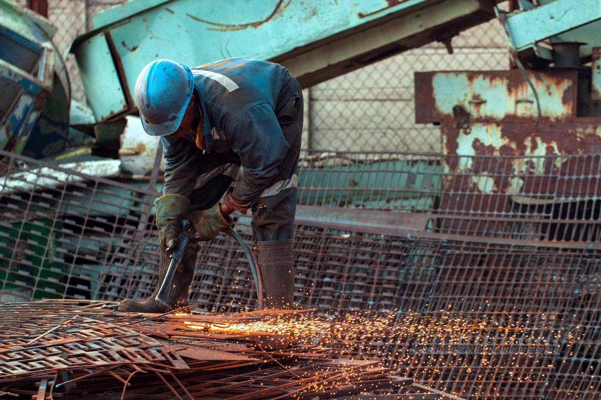

Максимална стойност за вашите железни отпадъци.
Превърнете старото желязо в пари още днес — топ цени за железен скрап, стари електроуреди и коли за скрап. Плащаме веднага.
- Над 20 години опит
- Цени по борсовите котировки
- Плащане веднага
- Безплатен транспорт

Какво изкупуваме?
Специализирани сме в черни метали и вторични суровини. Приемаме желязо, промишлен отпадък, коли за скрап и домакинска техника.

Плътно желязо
Масивни метални конструкции, греди, профили и арматура.

Тънко желязо
Ламарина и други отпадъци с дебелина под 2 мм.

Технологичен отпадък
От металообработващи предприятия — изрезки от лазерно рязане и др.

Коли за скрап (ИУМПС)
Изкупуваме и разкомплектоваме автомобили за скрап. Всички документи за дерегистрация в КАТ.

Стари електроуреди (ИУЕЕО)
Перални, хладилници, печки и друга домакинска техника.
Актуални изкупни цени
Ориентировъчни изкупни цени на железен скрап и вторични суровини в нашия пункт в София. Цената на желязото зависи от вида, количеството и качеството на материала — обадете се за актуална оферта, безплатно и без ангажимент.
* Цените са ориентировъчни, в евро на тон, за материал, доставен на нашата площадка, и следват борсовите котировки. Обновени на 04.07.2026 г. За по-големи количества, редовно обслужване с контейнери или товарене от ваш адрес правим индивидуална оферта — обадете се на 0877 77 55 77.
Как работи?
Обадете се
Свържете се с нас и ни опишете какво имате за продажба.
Оценка
Даваме ви цена веднага — по телефона или след оглед на материала.
Докарвате отпадъка или ние го взимаме от адрес
При по-големи количества организираме транспорт и товарене на ваш адрес.
Плащаме веднага
Получавате мигновенно плащане.

Над 20 години опит в отрасъла
Прогрестрейд работи на пазара за изкупуване на черни метали от 2002 г. Дългогодишният ни опит ни позволява да предлагаме конкурентни изкупни цени в София.
Цени по борсовите котировки в София
Гарантирано конкурентни изкупни цени — сравнете и вижте разликата.
Бързо и лесно разтоварване
Нашата товаро-разтоварна техника прави разтоварването лесно и безпроблемно.
Точно измерване
Калибрирани електронни везни и прозрачна процедура на приемане.
Дружелюбен персонал
Опитните ни служители ще ви помогнат с всеки въпрос.
Работим с водещи компании


Газокислородно рязане и демонтаж
Разполагаме с оборудване за газокислородно рязане на метални конструкции. Демонтираме стари машини, съоръжения и метални конструкции директно на вашия обект.
Научете повече за рязането →
Идваме при вас — безплатно
Изкупуване на желязо и вторични суровини от адрес и от място — при по-големи количества организираме транспорт и товарене на вашия адрес. Не е необходимо да се притеснявате за логистиката.
- Безплатен транспорт при над 500 кг
- Разполагаме с подходяща техника за товарене
- Газокислородно рязане на обемни метални конструкции
- Обслужваме цяла София и областта — Военна Рампа, Надежда, Подуяне, Люлин, Дружба, Гара Искър, Сточна гара, Божурище и др.